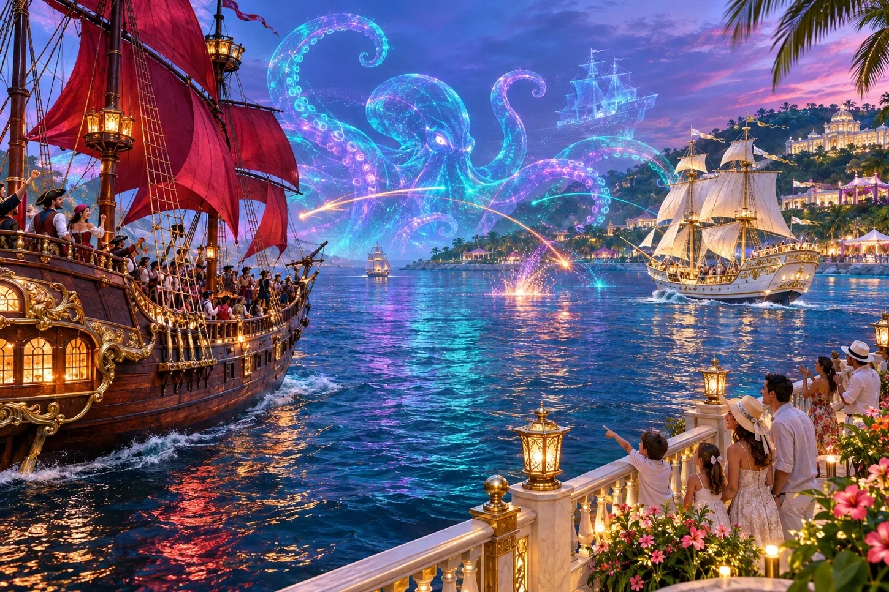
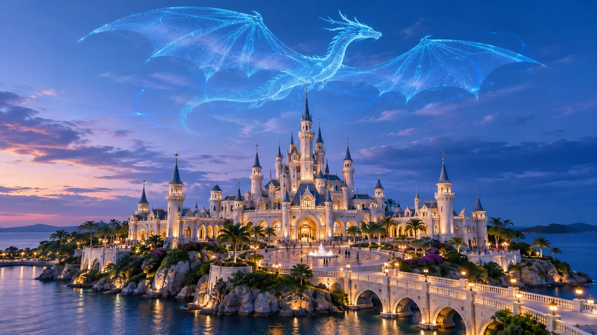
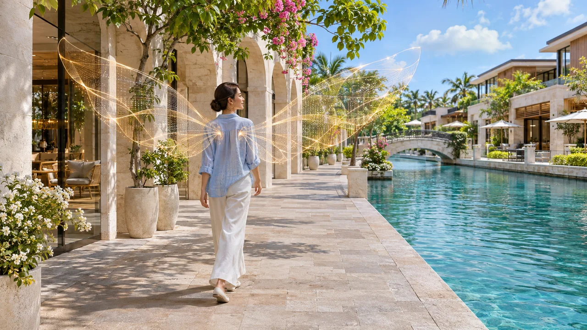
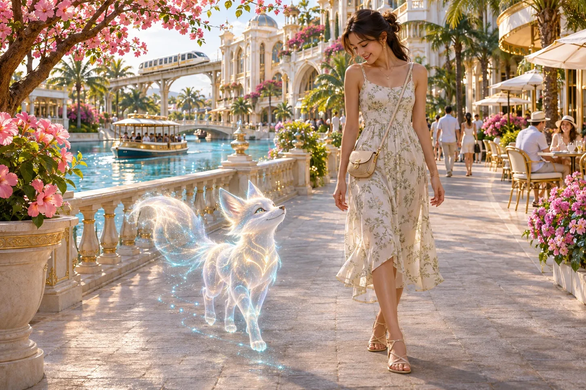
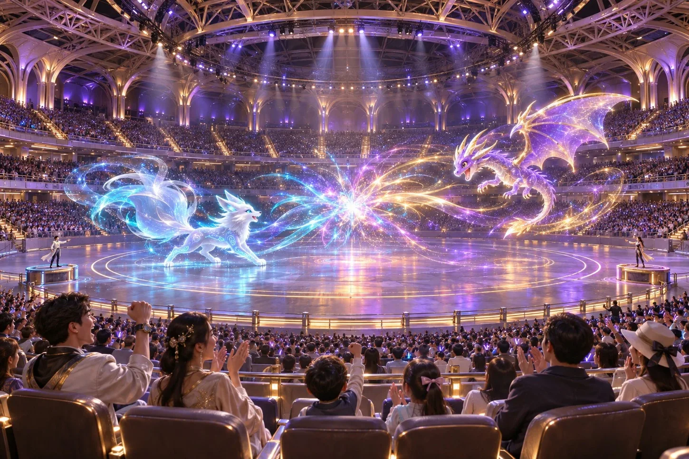
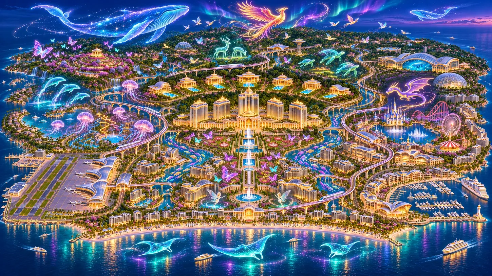

SEA EVENT
EDEN GRAND PIRATE WAR
模擬船が繰り広げる、一般観戦もできる海上イベント。巨大クラーケンはホログラム演出の一例です。

EDEN ISLAND / BEYOND THE REAL
海に怪物が現れ、街ではいつもと違う姿で歩く。エデン島の技術は、見るだけじゃなく、旅の途中で体験できます。
THREE WAYS TO EXPLORE
THE HOLOGRAM GALLERY
海上の大きなショーから、散歩中に見かける小さな演出まで。





写真は創作世界の演出イメージです。クリックやタップで拡大できます。
SHOWS & ARENAS
SEA EVENT
模擬船が繰り広げる、一般観戦もできる海上イベント。巨大クラーケンはホログラム演出の一例です。
EAST / THEME PARK
城の上空をドラゴンが舞う演出など、夜にはパークの景色も変わります。
東エリアの案内 →CENTRAL / LIVE ARENA
ホログラム公演やAIペットの大会を観戦できる地下会場。立体的な演出を客席から楽しめます。
中央エリアの案内 →演出は一例です。開催日時や観覧場所の詳細は、この試作版では案内していません。
HOLO-AVATAR
空港でアバターを作る、持っているデータを使う、そのままの姿で過ごす。ホロアバターは希望する方だけの体験です。
設定した姿が動きや表情に合わせて映ります。途中で変更したりオフにしたりでき、翼や尾を付けても実際の体の大きさは変わりません。本人に重なるアバターと、実体のないAIや遠隔操作の投影は別のものです。
目で見る姿と、カメラに映る姿 →AI TRAVEL COMPANION
AIペットは、行き先までの案内、おすすめ探し、多言語でのサポートができる任意のサービス。必要なときに呼び出し、お休みにしたり別の相棒に切り替えたりできます。
許可した範囲で画像の整理や一日の振り返りも。島の公式撮影を頼めば、みんなが入った集合写真を、少し高い角度から狙うこともできます。
島の公式撮影を知る →